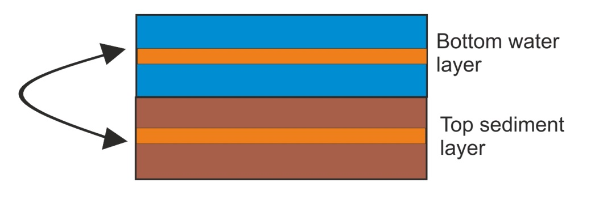
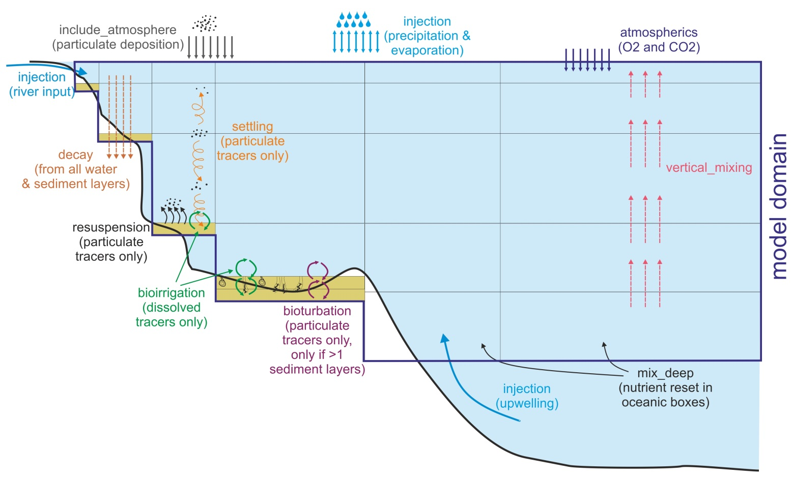
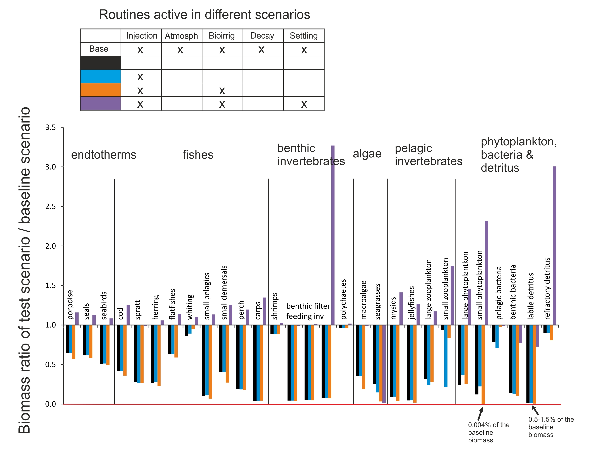

5. THE PHYSICS SUBMODEL
The Physics submodel deals with most physical and some biogeochemical processes in Atlantis, such as water and gas exchanges and mixing, nutrient inputs, deposition and resuspension of particulate matter, as well as some biological processes in the sediments, such as bioturbation and bioirrigation.
The central part of the Physics submodel is the transport model that reads in water exchanges from the hydrodynamic forcing files, applies a number of optional routines to correct for lack of horizontal and vertical mixing (see below), distributes water flows through the model domain, and calculates new concentrations of dissolved or passively advected tracers, such as salinity, temperature, oxygen, pH and pelagic planktonic organisms. These calculations simultaneously account for diffusion, advection and dispersion processes. The transport model is preceded by a number of optional routines executing sediment mixing, resuspension, gas exchange with the atmosphere, bioirrigation and others (see below).
Most of the details in the Atlantis Physics submodel are based on the Port Phillip Bay Integrated Model (PPBIM) described in Murray and Parslow (1997) and Walker (1997) and on the ERSEM model described in Ebenhöh et al. (1995) (see important references in Chapter 1.5). Atlantis users interested in understanding the physics processes deeper can learn more by consulting these references.
The parameters and flags used in the Physics submodel are described in:
- initial_conditions.nc
- physics.prm, run.prm and force.prm files
- hydrodynamics.nc forcing input file
- optional forcing NC and TS input files, such as temperature, salinity, pH, oxygen, contaminants, point source inputs, solar radiation, evaporation, precipitation and others.
In this chapter we will:
1) introduce physics and biogeochemical tracers and their properties,
2) describe the routines executed in the main physics() routine and parameters in the physics.prm file
3) explain why in some cases the user might need to correct for the lack of the vertical and horizontal mixing in hydrodynamic forcing files
4) give a brief introduction to the latest Atlantis developments allowing for the modelling of ice, land and contaminants
5) provide a small example demonstrating the importance of the optional physics routines
5.1. Physical and biogeochemical variables and their characteristics
The initial_conditions.nc file lists important characteristics of physical and biogeochemical tracers, used for various calculations in the physics() routine. Here is an example of a tracer description:
...
double Det_Si(t, b, z) ;
Det_Si:bmtype = "tracer" ;
Det_Si:units = "mg Si m-3" ;
Det_Si:long_name = "Detrital Silica" ;
Det_Si:dtype = 0 ;
Det_Si:sumtype = 1 ;
Det_Si:inwc = 1 ;
Det_Si:insed = 1 ;
Det_Si:decay = 0. ;
Det_Si:dissol = 0 ;
Det_Si:passive = 1 ;
Det_Si:partic = 1 ;
Det_Si:svel = -2.894e-005 ;
Det_Si:xvel = 0. ;
Det_Si:psize = 1.e-005 ;
Det_Si:b_dens = 1000000000. ;
Det_Si:i_conc = 200000000. ;
Det_Si:f_conc = 200000000. ;
...From this we can see that Det_Si is a three-dimentional variable (t,b,z), found in the water column (inwc=1) and the sediments (insed=1). It is not removed from the system through burial (decay=0), it is not dissolved in the water (dissol=0), but is present in a particulate form (partic=1). The sedimentation velocity of particles is svel=-2.894e-005, and its negative value shows that the particles sink (are not buoyant). The particle size is psize = 1.e-005 m
Table 6. Examples of currently used obligatory and optional physics and biogeochemical tracers and variables and their characteristics as defined in the initial_conditions.nc file (collected from different Atlantis applications and used for illustration purposes only). Further description of tracers and physics variables is given in the following chapters on sediment and biological processes.
Atlantis Tracer Properties
Obligatory tracers for dynamic properties
These tracers participate in ecological processes and change as a result. It is very important to get the characteristics of these tracers correct in the initial_conditions.nc file as Atlantis will use them for dynamic calculations.
| Tracer | Name | In water | In sed | Dissolved | Particulate | Decay | Svel | Psize |
|---|---|---|---|---|---|---|---|---|
NH3 |
Ammonia | x | x | x | 1.e-007 | NA | NA | |
NO3 |
Nitrate | x | x | x | 1.e-009 | NA | NA | |
DON |
Dissolved organic nitrogen | x | x | x | 0 | NA | NA | |
MicroNut |
Micronutrients | x | x | x | 0 | NA | NA | |
Oxygen |
Oxygen | x | x | x | 0 | NA | NA | |
Si |
Dissolved silica | x | x | x | 0 | NA | NA | |
Det_Si |
Detrital silica | x | x | x | 0 | -2.9e-005 | 1.0e-005 |
Optional tracers for dynamic properties
Required only if: - ¹ trackAtomicRatio flag is set to 1, or - ² flagIsEstuary flag is set to 1 in the run.prm file
| Tracer | Name | In water | In sed | Dissolved | Particulate | Decay | Svel | Psize |
|---|---|---|---|---|---|---|---|---|
P¹ |
Phosphorus | x | x | x | ||||
TOP¹ |
Total organic phosphorus | x | x | x | ||||
Carbon¹ |
Carbon | x | x | x | ||||
CO2¹ |
Carbon dioxide | x | x | x | ||||
SED² |
Sediments | x | x | x | 0 | -2.0e-005 | 5.0e-006 |
Obligatory diagnostic tracers for physical properties and reporting of biogeochemical processes
These tracers either describe pure physical properties (temperature, light, stress) or outcomes of other processes, e.g. chl_a concentration is a result of primary production and consumption. The properties of these tracers are hardwired in the Atlantis code and the values in the initial_condition.nc file are overwritten during simulations.
| Tracer | Name | In water | In sed | Dissolved | Particulate | Decay | Svel | Psize |
|---|---|---|---|---|---|---|---|---|
Salt |
Salinity | x | x | x | 0 | NA | NA | |
Temp |
Temperature | x | 0 | NA | NA | |||
Light |
Light intensity on the surface of a cell | x | 0 | NA | NA | |||
Stress |
Surface Stress | x | ||||||
Denitrification |
Denitrification | x | ||||||
Porosity |
Sediment porosity | |||||||
Nitrification |
Nitrification | x | ||||||
Chl_a |
Chlorophyll | x |
Diagnostic tracers
They are required in the initial_conditions.nc file and are used during debugging for reporting fine scale information about the group that is tagged by which_check parameter in the run.prm file.
| Tracer | Name | In water | In sed | Dissolved | Particulate | Decay | Svel | Psize |
|---|---|---|---|---|---|---|---|---|
DiagNGain |
Gain in checked group | |||||||
DiagNLoss |
Loss in checked group | |||||||
DiagNFlux |
Flux in checked group |
5.2. The main physics() routine
The routine physics() defined in atphysics.c is the main physics routine, run at each timestep of the simulation. It is described below in the order of execution. The first column lists the routines, the flags to activate them, and shows which flags are active in the example SETas model. The second column describes routines and parameters. Remember that (as elsewhere in this manual) routines are listed in italics() and files containing these routines are bold and underlined and libraries are bold. Parameter names from physics.prm are given in orange and those from force.prm file are also marked with an asterisk *.
I. Execute explicit optional physics processes.
| Process | Description |
|---|---|
| Add sources and sinks sourceSink() in atsourcesink.c injection 1 |
Applies forced inputs and outflows of water and nutrients from point sources, including evaporation and precipitation The number of point sources and sinks is given in npointss. The inputs are read in as time series TS or NC files and they give details on inflow or outflow of water (m³, temp, salinity) and nutrients (NH3, NO3, Labile Detritus, Si). They are also used to force nutrient inputs from river inflows, upwelling, waste disposal and other sources. Theoretically sinks of nutrients and water flows can also be included (negative values in the forcing files), but this has not typically been applied in practice. The sourceSink()* routine also deals with water exchanges due to evaporation (Evaporation) and precipitation (Precipitation). If the injection flag is set to 0 then evaporation and precipitation will not be done at all. Note that evaporation and precipitation forcing files are provided as two-dimensional NC files, with the values given as millimetres of water input or lost on a xy coordinate grid. These inputs are automatically converted to the Atlantis box geometry by the model. |
| Add solar radiation do_light() in light.c solar_radiation 1 |
Add solar radiation energy to the surface of the model domain (Solar_radiation). If forcing TS files of solar radiation are provided solar radiation intensity at each time step will be identical across the entire surface area of the model domain. This can be changed by setting lim_sun_hours to 1 in biology.prm*, which will apply a set of NASA routines to calculate sun hours for each box given its longitude (using lat/long projections from the BGM file) |
| Exchange of gasses between the surface water layer and atmosphere gasExchange() in atgas.c atmospherics 1 |
Executes temperature independent gas exchange with the atmosphere across the water-air interface at the top of the surface layer. This calculates new concentrations of gases in the surface layer and it assumes an infinite source of gases in the atmosphere. Gas exchange with the surface water layer is governed by the diffusion coefficient, saturation value and stagnant layer thickness of the gas. These coefficients and gases to be used in the routine are hardwired in Atlantis code and defined in the gaslist[] data structure in the atgas.c library. Currently only O2 and CO2 are included. Note that gasExchange() is not the only routine dealing with input of gases from the atmosphere. There is now an option to include explicit deposition of nutrients and gases from the atmosphere, including O2 and CO2 (see description of include_atmosphere flag below). The include_atmosphere option deals with deposition of nutrients and gases trapped in particulate matter. It is handled in the specific routines defined in atNutrient.c library atecology - e.g. O2 is handed by Oxygen_ROC() routine. The deposition of O2 in Oxygen_ROC() is temperature-specific. If both include_atmosphere and atmospherics flags are turned off there will be no O2 exchange with the atmosphere! |
| Decay or removal of tracers from the water column and / or sediments. decayBM() in atdecay.c decay_wc decay_sed 0 0 |
Removes tracers from the system, simulating burial in the sediments. The exponent of the removal rate is given in the initial_conditions.nc file :decay parameter, so that removal rate is calculated as [tracer_concentrationexp(:decaytime)]. The removal rate in the sediments can be scaled to that in the water column with decay_sed_scale parameter to set as a multiplier on the standard :decay rate. If the :decay parameter of a tracer is set to 0 in the initial_conditions.nc, no removal of the tracer will occur even if the routine is activated. Note, the decayBM() routine implements a complete removal of the tracer from the system, not the actual decomposition decay. Even if the decay is deactivated a tracer can still break down through nitrification and denitrification processes. In this case however its nitrogen content may not be entirely removed from the system, but can be transformed into other tracers as specified by the nutrient cycling steps (e.g. organic N is transformed into NO3). |
| Resuspension of particulate tracers from the sediments into water column resuspendBM() in atsuspension.c resuspension 0 |
Calculates erosion of sediments due to shear (bottom) stress as a function of sediment type. Then calculates new concentrations of particulate tracers in the bottom water column layer after the resuspension. The rate of resuspension depends on the bottom stress, porosity of the sediment and background erosion rate. These parameters are given in the initial_conditions.nc file. The bottom stress can also be supplied as an external BottomStress* forcing file. To enable the routine, the user must provide non-zero stress values. This can be done either by giving non-zero values for the “Stress” tracer in the initial_conditions.nc; or, if NC Stress values are zero, Atlantis will look for an external forcing file. If no forcing file can be found, Atlantis will quit. The maximum rate for a 1cm sediment depth is set in the max_erosion (m in a single time step). The routine is particularly important when simulating wetlands (shallow ecosystems with many sediment layers). |
| Settling of particulate tracers from the water column settleBMwc() in atsettle.c settling 1 |
Calculates settling (downward or upward!) of particulate tracers from the water column depending on their settling velocity :svel parameter in initial_conditions.nc. Only tracers with non-zero :svel and :psize will be acted upon. This typically includes particulate biogeochemical tracers (Detrital Si) and some phyto- and zooplankton. If settling velocity is positive, particles are buoyant and rise up through the water column (done in the advect_up() routine). If settling velocity is negative, particles sink towards the bottom (done in the advect_down() routine). The flux of tracers from the lowest water column layer is added to the uppermost sediment layer if the tracer is allowed to exist in the sediments (:insed parameter in initial_condition.nc). The deposition to sediments is done in the deposit() routine in atdeposition.c. The deposition depends on the sediment’s and tracer’s porosity. The porosity of the tracers is calculated in the calc_por() routine in atsedprops.c using the :psize (particle size) and :b_dens (bulk density) parameters from the initial_condition.nc file. Sediment porosity is set as a “phys” variable in the initial_conditions.nc file. However, if the settling routine is turned on sediment porosity is calculated dynamically through the simulation in the deposit() routine. The sediment porosity is calculated as a ratio of the new water volume in the sediment, after deposition, and the total sediment volume, after deposition. If a particulate tracer is not allowed to exist in the sediment (:insed is 0 in initial_conditions.nc file), it is retained in the lowest water column layer. The deposit() routine uses the maxseddz and minseddz parameters to define the maximum and minimum depth of one sediment layer. If the maxseddz is exceeded everything extra will stay in the bottom water layer and no more deposition will occur. |
II. Execute optional biological sediment processes – bioirrigation and bioturbation:
The bioirrigation and bioturbation routines simulate exchange of dissolved and particulate tracers respectively between sediment layers and between the bottom water column layer and the sediment. The baseline bioirrigation and bioturbation routines have been adopted from the PPBIM. However, Atlantis now also applies a multiplier to the baseline rate, which depends on the biomass of the living organisms in the sediment layers. The multiplier is calculated in the Biology submodel and will be described in the relevant chapter.
The bioturbation routine is only performed when more than one sediment layer is present! Because most models have only one sediment layer, the only way particulate tracers can be returned to the water column is through resuspension.
The full bioirrigation routine also requires more than one sediment layer, but it models simple exchange of dissolved particles even in models with only one sediment layer.
The processes used in Atlantis are similar to those in the PPBIM model, but are dynamically modified by the sediment fauna via an “enhancement” term (similar to that of ERSEM, Ebenhöh et al. 1995).
The “background density” of sediment organisms is set in the initial_conditions.nc file sedbiodens tracer and it can vary among boxes. Background density represents basic aerobic and anaerobic diversity. This background amount is “enhanced” depending on the abundance of the dynamically modelled infauna and epifauna groups (identified with _INF and _EP names in the GroupType parameter of the functional_groups.csv file). The abundance of dynamically modelled groups changes through time but the background density stays stable. The background biological activity remains present in sediments even if all dynamically modelled groups are wiped out (e.g. in anoxic sediments). Hence bioturbation, bioirrigation and other sediment processes can still occur (if activated).
Bioturbation and bioirrigation are simulated as exchange in thin water and sediment layers, as shown below. The routines take a small sliver of the water layer and sediment layer, swaps them and calculates new concentrations of dissolved and particulate tracers respectively. The thickness of the sliver to be exchanged reflects the intensity of the bioirrigation and bioturbation processes and depends on the amount of the biological activity in the sediment.

| Process | Description |
|---|---|
| Bioirrigation: Inflow of water and dissolved tracers from the bottom water layer into sediments due to biological activity bioirrig() in atbioirrig.c bioirrigation: 1 |
bioirrig() includes three subroutines (only the last two are done in models with one sediment layer). dissol_diff() calculates diffusion of dissolved tracers across the sediment layers, if more than one sediment layer is present. This is calculated as a product of: bi_dissol_kz diffusion constant at zero depth (m²s⁻¹ per animal per m²), density of biological activity of _INF and _EP groups, scalar of biological activity as a function of depth, and scalar of irrigation enhancement due to oxygen concentration. exchange() applies the inflow of water and dissolved tracers between bottom water layer and sediments. injection() does injection of water and dissolved tracers from bottom water layer into sediments, simulating active pumping of water by animals moving in burrows. The profile of biological activity with depth is set by the biosedprofile parameter, which can take four functional forms: constant, linear, parabolic, Gaussian. |
| Bioturbation: movement of particulate tracers throughout the sediment layers and into the water column due to biological activity bioturb() in atbioturb.c bioturbation: 1 |
Only particulate tracers that are not macrobenthos and are allowed in the sediments (sediment grains, settled phytoplankton, microphytobenthos, meiobenthos, detritus and sediment bacteria) can be acted upon by bioturbation. The bioturb() routine includes three subroutines: partic_diff() implements particulate tracer diffusion within the sediments using the diffusion constant bt_partic_kz (m²s⁻¹ per animal per m²). expul() applies expulsion of particulate tracers from sediments into the bottom water column using the bt_expulsion parameter (ms⁻¹ per animal per m²). mix_in() applies exchange of particulate matter across sediment layers using bt_exchange (ms⁻¹ per animal per m²). This routine works only if more than one sediment layer is present. |
III. Execute optional routines to enhance horizontal and vertical diffusion and mixing (see chapter 5.4 for why these routines may be needed):
| Process | Description |
|---|---|
| Horizontal diffusion hdiffBMwc() in athdiff.c horiz_diffusion 0 |
Horizontal diffusion is done before the main transport model is run. This was mostly needed in the past, when oceanographic models and their conversion to Atlantis forcing files did not provide sufficient horizontal mixing. |
| Filler horizontal diffusion applied for boxes that have not had any water exchanges for a set period of time filler_hdiffBMwc() in athdiff.c fill_zero_exchange 0 |
Hydrodynamic models don’t always resolve coastlines well, which can lead to some small coastal boxes being left isolated (no water fluxes into or out of them). This optional routine is used to correct for this. It is activated if there is no flux for a set threshold of days, provided in the flush_threshold (often set to 1 day). The routine will force mixing between the isolated box and matching layers of the adjacent boxes. The routine will apply a constant water column mixing coefficient wc_kz, which indicates the proportion of volume to be mixed (a reasonable value is within a range of 1e-9) and scale it by the relative box volumes. > The horizontal mixing can be further tuned using box-specific horizontal mixing parameter boxID:horizmix from the BGM file. > > To activate this box specific mixing set use_fill_horizmix to 1. Otherwise the baseline diffusion rate among boxes is used. |
| Vertical diffusion added to correct for the lack of vertical circulation (this is not the same as vertical mixing used to imitate eddies, see below) atvdiffBMwc() in atvdiff.c vert_diffusion 0 |
Vertical diffusion executed throughout the water layers before the main transport model. Setting flag mix_deep to 1 activates the replenishment of nutrients in the deep layers of oceanic boxes (those that have open water boundary with deep waters) and set the depth value for deep ocean layers in mix_deep_depth parameter. Nutrient values in the bottom layer of boxes that are deeper than mix_deep_depth will be reset to the original value given in the initial_conditions.nc The nutrients that will be reset are: NH3, NO3, Si, MicroNut and also Phosphorus and Carbon if they are tracked throughout the simulations (trackAtomicRatio flag is set to 1 in the run.prm) |
| Vertical mixing added to simulate upwelling and increased mixing by eddies vertical_mixing() in atvmix.c vert_mix 1 |
Because processes within one cell are considered uniform, explicit representation of eddies and upwelling would require a lot of small boxes, untenable for Atlantis models. Instead the supply of nutrients from deeper water levels by eddies and upwelling can be represented with this optional vertical mixing routine. The routine applies season and box specific vertical water column mixing, in addition to the vertical exchange forced through hydrodynamic files. The main difference between vertical diffusion routine above and vertical mixing is that diffusion is typically a slower process of movement from high to low concentration rates. Mixing in turn simulates advection (movement by water currents) and is usually much faster than diffusion. Also vertical mixing can be customised to vary across boxes and seasons. The total mixing rate (in m³s⁻¹) is calculated from lower layer up as a product of - mix_injection coefficient (1e-3) - Box specific :vertmix scalar defined in the BGM file - seasonal scale - eddy scale - volume of the box Note that the sign of the global mix_injection and box-specific :vertmix parameters defines the direction of vertical mixing. Usually these coefficients are positive, which means the water will flow upwards, but in theory they can also be negative. Either way, in vertical mixing routine water flows only in one vertical direction (up or down). The seasonal scale is modelled as a sine shaped wave (sin(2.03.1415(day_of_the_year-31.0)/365.0) and it’s fluctuations can be increased by setting the mix_season_kz multiplier (set to 10 in SETas model). The effect of eddies (eddy scale) is activated with eddy_vertmix flag. It can be tuned with two parameters. First, box-specific eddy strengths per each quarter of the year (the model linearly interpolates between these to get eddy strength on any one day) are set with eddy_S1 to eddy_S4. These eddy parameters are used also in scaling Primary_Production() in atprocess.c in the atecology library. Therefore, to allow for different effect on primary production and vertical mixing by eddies, the vertical mixing has specific parameter eddy_vertmix. Vertical mixing can further be further scaled with the global scaling coefficient eddy_mixscale As in the vertical diffusion routine above, activating the flag mix_deep will reset nutrient concentrations in the deepest layers of oceanic boxes The vertical mixing code within Atlantis to represent exchange between vertical layers is used to represent changes in upwelling or changes in mixing due to (seasonal or long term) modifications of mixed-layer depth that is not sufficiently captured in the hydrodynamics file. To activate this code set vert_mix to 1 in the physics.prm file. Then in the forcing.prm file add the pointers to the relevant file of scalars: # Vertical mixing scalar files use_VertMixFiles 1 vertMixScalar_rewind 0 nvertMixScalarfiles 1 vertMixScalar0.name inputs/Filename_VertMix.nc The structure of the Filename_VertMix.nc is the same as for the temperature or salinity files – i.e. a value per layer per box per timestep included in the file. The equation used to apply the modified vertical mixing is \[mix_{rate} = mix_{injection}*vertmix*vertmix_{scale}*eddy_{scale}*seasonal_{scale}*{vol}_{box,layer}\] |
 Figure 8. Illustration of optional physics routines described in detail above. Some boxes have two sediment layers. Vertical mixing can also be set as downwelling, but only one direction is possible in a given simulation.
IV. Execute the main transport model
Although there is an option to turn the transport model off (advect_diffusion 0) this should only be done for debugging purposes as it stops all water fluxes in the model domain. Also note that if you turn off the transport model this will stop the the t.hd timestep from incrementing. The timestep is the timestep from the hydro model. It is also used to read in data from the point source input files. So if you turn off the transport model the values read in from the point source files will always be the value corresponding to the first hydro timestep (the first time value in the first hydro forcing file).
The transport model has an option to scale all transport forced from hydrodynamic input file. This is set by setting scale_transport flag to 1 or 2.
If scale_transport is set to 1, the transport will be scaled by prcnt_exchange parameter. For example, setting prcnt_exchange to 0.5 will half all the horizontal and vertical transport, in some older models this was needed to help correct for hyperdifussion.
If scale_transport flag is set to 2, all transport is scaled by the area of the box and ka_exchange multiplier. The area corrected exchanges are multiplied by ka_exchange before they are used (transport_scalar = ka_exchange / box_area). This helps to ensure the transport is not scaled down too much.
Do not scale transport by box area if hyperdifussion correction by box area has already been done during the forcing file construction stage, such as in the Hydroconstruct package (see above).
| Process | Description |
|---|---|
| Main (advective) transport model transportBM() in attransport.c advect_diffusion 1 |
This routine executes all forced water fluxes (moves water across cells) and calculates new concentrations of tracers. Transport model also has a cascade_flows flag which executes transport among boxes with large differences in vertical layers. If cascade_flows is set to 0 the loop calculating transport will only go through the number of water columns in the existing box, if it is set to 1 it will go through the number of water columns in both of the exchanging boxes. The transportBM() routine calculates new concentrations of tracers, including temperature, salinity and pH. These calculations are done separately in the Properties_At_Depth() routine in atbiophysics.c in the atecology library. The calculated values are then overwritten if temperature, salinity, pH or other forcing files are provided (see below). The temperature calculations use baseline_temp and temp_ampltiude parameter and will be described in chapters dealing with Biology submodel. |
V. Read in temperature, salinity and other tracer forcing values and overwrite values calculated in the transport model
| Process | Description |
|---|---|
| Read in forcing files for temperature, salinity, pH or other forced tracers and overwrite calculated values tracerForcingBM() in attempsalt.c use_tempfiles* 1 use_saltfiles* 1 use_pHfiles* 0 use_force_tracers* 0 |
The calculations of tracer values done in the transportBM() routine are overwritten if forced values are provided and appropriate flags activated in the force.prm file Typically, Atlantis models include temperature and salinity forcing (Table 5), but also pH, oxygen and other tracers set in the initial_conditions.nc can be forced. Such forcing is done if calculations of tracer concentrations done in Atlantis are deemed to be of insufficient accuracy and better information is available from more specialised models or observations (see tracer forcing on the wiki) The number and names of all tracer forcing files must be listed in the force.prm parameters nforceTracers* and tracerNames, eg: nforceTracers 2 tracerNames 2 Oxygen Light This is followed by the actual files and parameter indicating whether the tracer values should be looped (rewound) or not. Oxygen_nFiles 1 Oxygen_File0.name inputs/forcisets/oxygen.nc Oxygen_rewind 1 Oxygen_wgt_coefft 0.7 The weighting coefficient is what weight to put on the values being read into Atlantis (using a weighted average of Atlantis value and value from the forcing file – so a 1.0 means the read in value is used in place of the native Atlantis value, 0.0 means Atlantis value is used, a value between is a mix of the two) (see instructions also on the wiki). Note, that the names of tracers provided in the tracerNames MUST exactly match the names in the initial_conditions.nc* file, so that Atlantis knows which tracers to overwrite. NOTE! Forcing of tracers, especially those containing nitrogen, should be done with care, as it can easily affect the conservation of mass in the model |
| Forcing species distributions use_move_entries 1 |
To change the distribution of species (for movement) you need to set the flag and then provide the following information for each group you wish to force (this example has two groups, FXX and FYY, and 2 stages) nforceMoveGroups 4 MoveGroupCodes 4 FXX_stage_0 FXX_stage_1 FYY_stage_0 FYY_stage_1 Also list the distribution nc files - 1 file per “MoveGroupCode” FXX_stage_0_File.name DistribFilename1.nc FXX_stage_1_File.name DistribFilename2.nc FYY_stage_0_File.name DistribFilename3.nc FYY_stage_1_File.name DistribFilename4.nc You must also provide the starting time for using the forcing (so it does not have to start on day 0 of the model simulation) FXX_stage_0_tstart 0 FXX_stage_1_tstart 0 FYY_stage_0_tstart 0 FYY_stage_1_tstart 0 The format of the nc files and other relevant information is available in the section Forcing the model distributions with species distribution models. |
VI. Do final corrections and scaling
| Process | Description |
|---|---|
| Apply temperature, salinity and pH scalars to the biological processes Ecology_Apply_Environ_Scalars() from atbiophyscis.c in atecology |
Runs optional scaling of biological processes by environmental conditions, such as temperature-, oxygen-, salinity-, pH- dependent feeding rates, mortality or other biological processes. This will be described further in the Biology routines |
| Update eddy values Eddy_Strength_Update() routine in atphysics.c |
Conducts linear interpolation of eddy strengths for the current day of the year from the quarterly box specific values given in eddy_S1, eddy_S2, eddy_S3 and eddy_S4. |
| Checks saturation values Saturation_Check() in atsaturation.c |
Checks that gases and nutrients haven’t surpassed saturation values. If saturation values are exceeded, then concentrations are reset to the maximum saturation concentrations. |
| Get ice related information from input forcing files Get_Ice() in aticeIO.c |
Reads in ice properties for the current time step from TS or NC forcing files Only executed if the initial_conditions.nc file has the global attribute icenz (see below and details on wiki), which activates the ice model. |
| Update time for writing outputs | Update the next time to write the values into inputs.ts and exports.ts files (see Table 3 on the contents of these files) |
5.3. Other parameters in physics.prm not included in the physics() routine
Below are the remaining parameters and physics processes that were not described in the main physics() routine.
I. Resetting water column depths
wc_dz_tol: This parameter is used by check_wc_dz() routine in the atvertgeom.c file of the atphysics library. The routine checks the depth of water layers. Transport of water fluxes can in some cases cause too much flux into certain layers. This can be controlled by setting the maximum change in depth allowed in the wc_dz_tol parameter. The model will only allow this much fractional change before dz is reset to nominal value given in the initial_conditions.nc file by the nominal_dz variable. The wc_dz_tol parameter in many models is set to 0.2.
constrain_wc: This is a flag that is called in the box_bio_process() routine in atbiology.c and it resets the minimum water column depth to 1m if it becomes any shallower due to water fluxes. Turning this flag on is recommended in models that have a lot of shallow water areas and do not model sediment processes through multiple sediment layers explicitly. This avoids difficulties in modelling nutrient fluxes in very shallow waters.
II. Checks for the depth of sediment layer(s)
Same checks are done for the depth of sediment layers, which are controlled by maxseddz and minseddz parameters. The depth of the sediment layer(s) is controlled by the check_sed_dz() routine in atvertgeom.c. If the sediment layer depth gets too small the layer is merged with an adjacent sediment layer. If the sediment layer depth becomes too large it is split in two (made up of the original layer and a new inserted sediment layer). This is only used in models that have >1 sediment layer! In models with only one sediment layer, there are no constraints on the thickness of the sediment layer.
III. Atmospheric deposition of gases and nutrients trapped in particulate matter
Atlantis has always allowed for atmospheric deposition of NH and NO, but this new functionality makes this explicit and allows users to modify atmospheric concentrations (mg per m3) of nutrients and gases trapped in particulate matter. Note, this is not the diffusion of gases through the water’s surface, which is dealt with in the gasExchange() routine. The atmospheric deposition is handled in respective nutrient routines in the atNutrient.c file in atecology library. To apply the atmospheric deposition, set include_atmosphere flag to 1 in the physics.prm. If the flag is set to 0 there will be no implicit deposition from the atmosphere.
If include_atmosphere is active then atmospheric concentrations (mg per m3) must be provided for the following seven nutrients and gases (example values given here are taken from the SETas model)
atmospheric_NH 0.017
atmospheric_NO 0.025
atmospheric_F 0.0
atmospheric_P 0.0
atmospheric_Si 0.0
atmospheric_O2 198.9
atmospheric_CO2 0.0
IV. Scaling of point sources
It is possible to scale the input of nutrients from point sources given in the TS files. This scaling might be useful if simulating increase or decrease of nutrient input through time. The scaling routines are activated with the flag nutrientchange. If the flag is set to 1, then a number of additional parameters should be provided, telling Atlantis how to scale the nutrients. The parameters required for scaling allow detailed scaling of each nutrient in each point source and are explained further on the wiki.
V. Other parameters from old functionality
vdiffwt_wc: sets the scalar of water column diffusion and is used in the optional and currently rarely activated vertical and horizontal diffusion routines.
vdiffwt_sed: sets the scalar of diffusion in the sediments. It is used in the bioirrigation routine.
edge_type: a string of box-specific parameters describing the way box edges deal with water fluxes (0=standard, 1=absorptive, 2=reflective, 3=assymetrical scaling). This was used in the early days of Atlantis, when oceanographic files were not as sophisticated as they currently are and transport of tracers had to be manually adjusted. Setting different edge types for different boxes scaled the transport of tracers into and from the boxes. For current models, it is recommended to set the edge_type to 0 (standard) for all boxes.
biooxprofile: This was used in earlier Atlantis versions when the oxygen profile in the sediments was set and not dynamic. Currently the amount of oxygen in the sediments dynamically depends on the amount of biological activity and the parameter is not used.
5.4. When to use vertical and horizontal transport and mixing?
The horizontal and vertical diffusion routines hdiffBMwc() and atvdiffBMwc() were created and used most often at a time when oceanographic models were still quite coarse and did not capture the water fluxes with sufficient accuracy. They are rarely used in current models. However, a number of issues still remain due to the loss of spatial resolution when converting files into the Atlantis model domain. This is where activating optional vertical mixing and filler horizontal diffusion routines might be useful:
1) Eddies. The spatial scale of most Atlantis models is too coarse for explicitly resolving oceanic eddies. Yet, eddies have a strong influence on productivity and oxygen content and ideally should be included in some form. The effect of eddies can be captured in two non-exclusive ways:
a) Eddy parameters (eddy_S1 to eddy_S4 and eddy_mixscale) parameters are used in the Primary_Production() routine to scale production. If some boxes are known to have strong eddies that amplify local production, the user can modify box- and season-specific eddy parameters to enhance production in certain boxes and certain seasons. The presence of eddies will scale the growth rate of primary producers, so that for the same nutrient concentration more growth is allowed (but of course, no growth is possible if no nutrients are available).
b) Eddy effect on productivity can be simulated by activating the vertical_mixing() routine, where mixing will be enhanced with box- and season-specific eddy scalars. Increased vertical mixing will bring more nutrients to upper water levels and will increase productivity in boxes identified through seasonal eddy_S1 to eddy_S4 values (which can differ box to box, showing relative eddy strength). Differences in vertical mixing intensity among boxes can be further tuned using the box-specific :vertmix parameter in the BGM file.
Eddies are not currently included in most models, but exploring their potential effect on the model outcomes is recommended. They provide a useful approach for adding spatial realism in primary productivity dynamics and may be particularly important in deeper waters and in systems where eddy effects are known to be strong.
2) Upwelling. The importance of upwelling for primary productivity is well recognised, but it is often difficult to capture the intensity of vertical mixing and nutrient input through the hydrodynamic forcing inputs alone. The latest oceanographic models are getting better in capturing upwelling through vertical fluxes, but in some cases Atlantis modellers might want to add an additional forced time series of point nutrient source into boxes where nutrient supply due to upwelling is not accurately captured. Upwelling would normally only be added into oceanic boxes, i.e. those that do not end with the sediment but with the open deep water boundary. The mixing of the forced nutrient input into the water column might have to be increased using the vertical_mixing() routine and by modifying box specific :vertmix parameter in the BGM file (or by using eddy_S1 to eddy_S4 parameters), to ensure the additional nutrients get properly mixed into the water columns.
Note, that the replenishment of nutrients in the deepest water column layers of the oceanic boxes may not require forced nutrient inputs, as it can be set with the mix_deep flag (see the description of the vertical diffusion routine above) and by normal vertical mixing. Yet, activating the mix_deep will only reset the nutrient concentrations in the deepest water layer to the nominal (initial) values given in the initial_conditions.nc. Oxygen can be added to the list of variables that are included in this representation of the replenishment from deep waters using mix_deep_O2 (by setting it to 1; 0 indicates Oxygen will not be included)
Including a separate input forcing file allows the user to specify time variable nutrient input throughout the year.
3) Absence of fluxes in small coastal boxes. Many oceanographic models, unless they were specifically built, still do not capture coastal processes with sufficient detail. This, combined with the loss of spatial resolution, can lead to isolated coastal boxes that receive no water fluxes (especially if the boxes are small or particularly shallow). This would naturally affect the model outcomes in such boxes, leading to high accumulation or depletion of nutrients and biomass.
Ideally, such issues should be resolved in cooperation with oceanographers who developed the models. If this is not possible, the filler horizontal diffusion routine will provide a very crude approximation of mixing for such boxes. Mixing can be further tuned with box specific mixing scalars (:vertmix and :hozirmix) in the BGM file.
The exploration of vertical and horizontal water fluxes is strongly recommended, especially during the model development stage. Currently there are two complementary ways to do it:
1. Use a shinyrAtlantis R package (see chapter 4.4) to plot fluxes through time and connections among boxes. The tool helps to identify isolated boxes, visualise intensity and direction of fluxes among boxes and also plot the magnitude of vertical fluxes in each box. The user can then compare these fluxes with the existing oceanographic knowledge and decide whether the intensity of vertical mixing should be increased or decreased using box-specific parameters.
2. Use passive inert tracers, such as sediments (SED in the initial_conditions.nc) to explore dispersal of particles through the model domain. Sediments are not acted upon by any organisms, so they won’t be eaten or decay (make sure :decay is 0). The initial concentrations of the tracer can be set in specific locations in the initial_conditions.nc file and their dispersal through the model domain followed in the model output. Alternatively, sediment inputs can be given in the TS files as forced point sources; and their dispersal from the point input locations can then be followed through time.
5.5. Latest developments
New functionality is added to Atlantis almost every month. At the time of writing of this manual (April 2016) three significant new features were being tested: land, ice and contaminants. They are described here briefly, but the users are advised to check Atlantis wiki for further developments and instructions.
5.5.1 Land
It is now possible to include land in Atlantis. The key reason to include this functionality is to allow explicit modelling of the movement of nutrients, organisms and human activity between land and water (groups can only make this transition if they are marked as being able to live on land and in the water in the functional_groups.csv file). It also allows for the future development of Atlantis into an integrated water-land model (so you can model land organisms). Currently this may be useful for shallow water areas, harbours and estuaries that have a lot of islands.
The optional land model is turned on by activating the flag flagAllowLand in the run.prm file. Land boxes are set up in the BGM file as having positive botz value. Land occupies water column layer 0 (bottom layer) and processes on land boxes are modelled in two-dimensional space, just like those for epibenthos. To obtain the total biomass, tracer values on land boxes are not multiplied by depth. It is also possible to include specific terrestrial tracers, by setting their bmtype = "terrestrial" in the initial_conditions.nc file. The values for these tracers would be stored in a different place than those for the water column tracers.
5.5.2. Ice
Atlantis applications for the northernmost and southernmost domains (Barents Sea, Baltic Sea, Antarctica and others) have prompted the development of an explicit ice model.
The optional ice model is activated when the initial_conditions.nc file has the global icenz variable included. This sets up the maximum number of ice layers. The ice model requires ice forcing files and their paths need to be identified in the force.prm (nInceFiles parameter in force.prm)
The key characteristics of ice are described in the wiki along with the additional parameters added to the physics.prm - these include maximum and minimum depth of an ice layer (maxicedz and minicedz), the number of ice classes, presence of slush, and specification of the ice model to use. The biological groups that are allowed in the ice include bacteria, diatoms, mixotrophs and small zooplankton. Activating the ice model requires a number of new parameters in the biology.prm file too. These describe how to handle albedo, light attenuation, the depth consumers can dig into ice (the ice penetration depth of predators).
5.5.3. Contaminants
It is now possible to track an unlimited number of contaminants through the food chain. However, each contaminant requires specific new tracers tracking contaminant concentrations in each functional group (and each age group of fully age structured functional groups), which means significant changes to the input files and longer simulation run times. Each contaminant in the initial_conditions.nc is setup as a separate tracer (e.g. Arsenic). Because contaminants are tracked through all functional groups, a new contaminant tracer must be added for all tracked functional groups, e.g. Sed_Bact_Arsenic, Zoo_Arsenic, Cod1_Arsenic, Cod2_Arsenic, Cod3_Arsenic and so on.
The functional groups take up contaminants either through contact, general uptake or through consumption. For each functional group the user will have to provide a number of new parameters in the biology.prm file: the uptake shape (linear or sigmoidal), uptake rate (mgm-3 per second), 100% and 50% lethal concentration, and time to reach 50% mortality. It is also possible to include an additional contaminant effect on growth.
To set up contaminant tracking set the track_contaminants flag to 1 in the run.prm file and provide contaminant names and forcing files.
The definitions of contaminant tracers are added to the run.prm file. For example, if you want to add a single Arsenic tracer you would add the following to the run.prm file:
# Set track contaminants to 1 to have active contaminants and 0 if no contaminants are desired
track_contaminants 1
# The number of contaminants to read in
num_contaminants 1
# Whether you need to check the contaminant fluxes (for the debugging or calibration of the contaminant model components)
flag_contam_sanity_check 1
To identify the contaminants, add an array of space separated contaminant names.
Atlantis will search for tracers with these names in the initial conditions file.
The number after contaminant names is the number of contaminant names to read in - same as other array definitions in the prm files.
contaminant_names 1
Arsenic
The units of the contaminants are entered as a space separated array.
contaminant_units 1
As/m^3
Atlantis will then expect the following tracer to be defined in the initial_conditions.nc model :
double Arsenic(t, b, z) ;
Arsenic:bmtype = "tracer" ;
Arsenic:units = "As/m^3" ;
Arsenic:long_name = "Amount of Arsenic" ;
Arsenic:sumtype = 1 ;
Arsenic:dtype = 0 ;
Arsenic:inwc = 0 ;
Arsenic:insed = 0 ;
Arsenic:dissol = 0 ;
Arsenic:decay = 0. ;
Arsenic:partic = 0 ;
Arsenic:_FillValue = 0. ;
For each contaminant tracer Atlantis must be provided with a forcing file in netcdf format (the file name and path is given in the force.prm file along with all other forcing time series). These can be all contained in a single netcdf file or with separate files per tracer. The following is an example forcing file in line with our example – the contaminant is for Arsenic in a model, for a model with 2 boxes and 3 water column layers. This example is for a single spill in a single box/layer of the model on the second time step in the file. This assumes the contaminant will be spread around the model using the existing transport model within Atlantis.
netcdf Arsenic_filename {
dimensions:
t = UNLIMITED ; // (3 currently)
b = 2 ;
z = 4 ;
variables:
double t(t) ;
t:units = "2005-01-01 00:00:00 +10" ;
t:dt = 86400. ;
double Arsenic(t, b, z) ;
Arsenic:_FillValue = -999. ;
Arsenic:missing_value = -999. ;
Arsenic:valid_min = 0. ;
Arsenic:valid_max = 300. ;
Arsenic:units = "As/m^3" ;
// global attributes:
:title = "trivial" ;
:geometry = "VMPA_setas.bgm" ;
:parameters = "" ;
data:
t = 0, 86400, 172800 ;
Arsenic =
_, _, _, _,
_, _, _, _,
0.1, _, _, _,
_, _, _, _,
_, _, _, _,
_, _, _, _ ;
}To identify the forcing file enter the following into the force.prm file:
use_force_tracers 1
# The number of tracers to search for in the files and the names of those tracers.
nforceTracers 1
tracerNames 1
Arsenic
# Now the actual files. Can have more than one tracer in a file.
Arsenic_nFiles 1
Arsenic_File0.name Arsenic_filename.nc
Arsenic_rewind 0
Arsenic_File0.use_resets 0 #determines whether the values in Atlantis are reset or added to existing values
Impact response functions
The groups within Atlantis take up contaminants either through contact, general uptake or through consumption.
Some of the relevant parameters (which need to be added to the biology.prm file) and processes are:
| Flag (parameter) | Meaning |
|---|---|
flag_dissolved_pollutants |
Flag indicating whether the contaminants are dissolved and transmitted in excretion (1) or not (0) |
flag_contamMortModel |
Flag indicating whether top use the simple mortality model from Laender et al 2008 (1) or compound model from InVitro (0) |
flag_contamInteractModel |
Flag indicating - No contaminant interactions (0), Additive interactions (1), Multiplicative interactions (2), Most limiting contaminant dominates (3) |
flag_contamGrowthModel |
Flag indicating - No growth effects of contaminants (0), InVitro representation (1), logistic model (2) |
flag_contamMove |
Flag indicating the avoidance scalar used - 0 = none, 1 = knife-edge, 2 = sigmoidal, 3 = left shoulder flat top |
flag_contamOnlyAmplify |
Flag indicating whether the interacting contaminants can only amplify (1) or can buffer/negate each other too (0) |
flag_contamMinTemp |
Flag indicating the minimum temperature to consider in contaminants relationships that involve temperature corrections (if the realised temperature is lower this minimum value is used instead) |
flag_detritus_contam |
Flag indicating whether running contaminants through detritus |
flag_contam_halflife_spbased |
Flag indicating whether half-life of contaminant is species specific |
flag_contamMaternalTransfer |
Flag indicating whether maternal transfer enable |
Other relevant parameters:
Contaminants can also affect movement. There is the potential for mobile species (defined by the VerticallyMigrates and HorizontallyMigrates settings for the species in the functional_groups.csv file) to avoid the contaminants. It is not always appropriate biomass pool groups to show this behaviour so to turn it off set biopools_dodge_contam 0 in the biology.prm.
For each of the contaminants the following parameetrs is required. For contaminant ZZZZ the coefficient indicating degree of dissolubility of the material (used if flag_dissolved_pollutants is set to 1, and determined for each contaminant - 1 all, 0 none) is set using ZZZZ_dissolv_coefft. Half life in seconds is set using ZZZZ_half_life. The flag indicating whether the contaminant effect is temperature dependent is
ZZZZ_temp_depend.
For each functional group XXX the following is also required:
XXX_ZZZZ_uptake_rate - uptake rate (per day - will be converted to per second inside code).
XXX_ZZZZ_InstantDoseMortality – the instant dose contact mortality rate
XXX_ZZZZ_LD100 - the concentration that will kill 100% of the population.
XXX_ZZZZ_LD50 - the concentration that will kill 50% of the population.
XXX_ZZZZ_TimeToLD50 - the number of seconds that it takes to kill 50% of the population (based on Invitro code)
XXX_ZZZZ_avoid - the concentration where animals will begin avoiding the substance
XXX_ZZZZ_K_avoid - the constant used in the avoidance curve (for when there is a slow Gaussian tail to the response rather than a knife edge cut off)
Growth effects due to contamination can also be represented using the following parameters. For each species and each contaminant add
XXX_ZZZZ_GrowthThresh - the tissue contaminant level where growth effects start
XXX_ZZZZ_GrowthEffect - the size of the growth effect (as a scalar)
The flag setting the uptake model XXX_ZZZZ_uptake_option. This currently has three settings:
If set to 1 use a linear uptake (parameter is in parts/sec)
\[C_{a,t} = C_{a,t - 1} + dt \cdot \tau \cdot C_{c,t}\]
where Ca,t is the concentration of the contaminant in an agent at time t; Cc,t is the concentration in the water column (or sediments) and τ is the species specific contaminant uptake rate.
If set to 2 then use a sigmoid function
\[C_{a,t} = \frac{C_{a,t}'}{dt}\]
\[C_{a,t}' = \left( C_{c,t - 1}^{(1.0 - \varsigma)} - {\left( C_{c,t - 1}^{(1.0 - \varsigma)} - C_{a,t - 1}^{(1.0 - \varsigma)} \right) \dot e}^{- \mu \dot dt \dot (\varsigma + 1.0)} \right)^{\left( \frac{1.0}{1.0 - \varsigma} \right)}\]
with \(\varsigma\) the uptake constant (between 0 and 1, set to 0.99 by default) and the uptake rate.
And if set to 3 then an alternative sigmoidal uptake is used – this is ideal for representing interactions with a toxin that has no effect until a critical concentration is reached
\[C_{a,t} = \frac{C_{a,t}}{C_{a,t - dt} + \left( C_{a,t} - C_{a,t - dt} \right)e^{- \tau_{s}dt}}\]
If you want to allow for uptake of contaminants back out of detritus you also need to set flag_detritus_contam to 1.
Movement and reproduction can both be scaled due to level of contaminants in the organism using XXX_ZZZZ_MoveEffect and XXX_ZZZZ_ReprodEffect.
Maternal transfer is also possible (if the flag flag_contamMaternalTransfer is set to1) in which case the maternal transfer rates need to be set – both that for transfer during conception (recruitment) XXX_ZZZZ_maternal_transfer and during suckling (if have maternal care) XXX_ZZZZ_suckling_transfer.
5.6. Outputs of physics tracers in the output.nc file
Values of physical variables throughout the simulation are reported in the main output.nc file. Although not usually analysed in standard simulations, it might be useful to explore these values during the model development stage.
Table 7. List and characteristics of physics variables given in the output.nc files (the same variables are given in the initial_conditions.nc file but without the time dimension).
| Name | Description, units | Comments |
|---|---|---|
volume (t, b, z) |
Volume of each cell at each time step, m³ | The volume changes due to water fluxes that simulate currents and tides. The change in the box’s volume is seen only as change in the depth and not surface area of the water column. The maximum fractional change in the depth is set by wc_dz_tol, if the depth exceeds this the depth is reset to the nominal_dz values given in the initial_conditions.nc. At present big tides will cause this reset, a flag to disable this is under development so please check the wiki for any updates. |
hdsource (t, b, z) |
Hydrodynamic sources, 1 | A number of fluxes (number connections) into a given box – from other boxes and from itself |
hdsink (t, b, z) |
Hydrodynamic sinks, 1 | A number of fluxes (number connections) from a given box – to other boxes and to itself |
eflux (t, b, z) |
Hydrodynamic net horizontal exchanges, 1 | Total inflow or outflow (positive/negative value) of water into the given cell in the horizontal direction |
vflux (t, b, z) |
Hydrodynamic net vertical exchanges, 1 | Total inflow or outflow (positive/negative value) of water into the given cell in the vertical direction |
porosity (t, b, z) |
Porosity of the sediment layer, 1 | Fractional porosity of the sediment (from 0 to 1). Initial values are set in the initial_conditions.nc, but the property is dynamically calculated after (optional) settling of particulate tracers |
nominal_dz, (b, z) |
Thickness of a water layer, m | Initial or nominal depth of water column and sediment layers in each box. This is not a dynamic variable, as it does not have the time dimension. For all but the bottom water column layers the nominal depth is usually a round number (1 to a few hundred meters). The depth of the bottom water column layer varies depending on the terrain of the actual ecosystem (see Fig. 4). |
numlayers (t, b) |
Number of layers | Number of layers in each box as set by the user. The number of layers is set in the initial_conditions.nc and currently remains stable through time. New functionality in the future might allow the number of water column layers to change due to large tides. |
dz (t, b, z) |
Thickness of a water layer, m | Dynamic thickness of the water layer, reflecting changes in its volume due to water fluxes (see volume variable above) |
topk (t, b) |
Sediment top index | The sediment layer that has the interface with the water. In current models this is always 0, but the variable was used in the PPBIM when multiple dynamic sediment layers were modelled |
sedbiodepth (t, b) |
Depth of biological activity, m | Maximum depth of biological activity in the sediments. The shape of the profile of biological activity with depth is set in the biosedprofile in physics.prm. The actual depth of the activity will change depending on the amount of activity present and the oxygen levels |
seddetdepth (t, b) |
Max depth of detritus, m | Depth of detritus in the sediment layer. It determines the depth of the habitat suitable for the infauna and changes through time due to sediment processes. It is dynamically calculated in Bio_Box_Process() routine in atbiology.c. |
sedoxdepth (t, b) |
Depth of oxygen horizon, m | Depth of the oxygenated sediment layer. The initial values are set in the intial_condition.nc, but the actual oxygen layer depth is dynamic and depends on the amount of oxygen in the water column and sediments, and amount of biological activity. |
sedbiodens (t, b) |
Biological activity, Animals m² | The “background density” of biological activity that is always present in the sediment. It is set by the user and can vary among boxes to reflect different quality of the sediment (see description of bioirrigation and bioturbation in chapter 5.2). Even though this variable has time dimension, it does not currently change through time |
sedirrigenh (t, b) |
Bioirrigation enhancement, 1 | Scalar of bioirrigation enhancement due to action of infauna species (marked with _INF in the GroupType of the functional_groups.csv file). It is calculated in the Irrig_and_Turb() routine in atprocess.c in atecology library |
sedturbenh (t, b) |
Bioturbation enhancement, 1 | Scalar of bioturbation enhancement due to action of infauna species (marked with _INF in the GroupType of the functional_groups.csv file). It is calculated in the Irrig_and_Turb() routine in atprocess.c in atecology library |
erosion_rate (t, b) |
Erosion rate m/s | Dynamic erosion rate variable, which depends on the supplied bottom stress values and the topk variable |
eddy (t, b) |
Eddy strength, 1 | Eddy strength in each box at each time step, depending on the eddy seasonal values and scalars (see vertical mixing routine description in chapter 5.2) |
Key: - t = time dimension - b = box dimension
- z = layer dimension - 1 = dimensionless
5.7. Importance of optional physics routines
During the model development stage many people focus their attention on the parameters defining biological routines, while the physics.prm file is rarely touched. However, a number of optional routines included in the Physics submodel may have a large effect on the nutrient dynamics – bioirrigation, bioturbation, settling of particulate matter. This in turn is likely to have a large effect on biological groups and especially lower trophic levels. The example below is a quick analysis on the effect of turning some Physics routines off on total biomasses of functional groups in a Baltic Sea model. The model is still under development and is not presented in detail here.

Figure 9. Total final biomass ratios of all Baltic Sea model functional groups in scenarios exploring the effects of optional physics routines. The simulations were run for 20 years.
Separate analysis was also done where six parameters in the physics.prm file defining bioturbation and bioirrigation intensity (typically in the range of 1e-7 to 1e-8) were increased 1000 times. The result is not shown but the effect was very minor, for most groups it made less than 5% difference in the final biomass compared to the scenario using same the physics routines but with default parameter values. Note, that the bioturbation routine is not included here, because the Baltic Sea model has only one sediment layer and hence the routine cannot be performed (setting bioturbation flag to 1 or 0 did not have any effect on biomasses).
::: {callout-tip title=“Good practice tip 6”} It is recommended that while developing the model, users conduct a range of simulations with some of the optional routines turned on or off and explore different ways that physical and biological process might affect nutrient turnover. :::
5.8. Checking hydrodynamic transports
In some instances you may want to track whether the transports are matching current patterns. To use it, update the code and
- In run.prm add
flagpassivetracer 1 # Flag indicating whether a passive tracer is needed for tracking tranpsorts or not (1 = yes, 0 = no)
- In the in.nc file you need to add the tracer. In the header (text section at the start of the file) add the following
double SED(t, b, z) ;
SED:bmtype = "tracer" ;
SED:units = "mg N m-3" ;
SED:long_name = "Passive tracer" ;
SED:sumtype = 1 ;
SED:dtype = 0 ;
SED:inwc = 1 ;
SED:insed = 1 ;
SED:dissol = 0 ;
SED:decay = 0. ;
SED:partic = 1 ;
SED:passive = 1 ;
SED:svel = 0. ;
SED:xvel = 0. ;
SED:psize = 1.e-06 ;
SED:b_dens = 1000000000. ;
SED:i_conc = 200000000. ;
SED:f_conc = 200000000. ;
SED:isabs = 0 ;
SED:iscontam = 0 ;
SED:_FillValue = 0. ;
Then in the data section of the file you need to add
SED =
N, _, _,;
Where N is the tracer doping you want to use if you want it to be there at the start of the model. You could also introduce it later on as a point source. Let me know if you want to do that (its like adding a river inputs so really straight forward).
As to the _ you need as many data entries in total as there are layers (water column + sediment layers) * number of boxes in the model (lets call that value “LxB”. Now the N needs one entry so the total number of _ you need is (LxB -1)
So for a model with 3 layers in 4 boxes where N is entering in box 1 you would have
SED =
_, _, _,
N, _, _,
_, _, _,
_, _, _ ;
At present it really only makes sense to dope one location at a time with the N otherwise you won’t know where things have come from as you can’t have more than one SED variable at a time. If multiple tracer types are required please contact the developers.